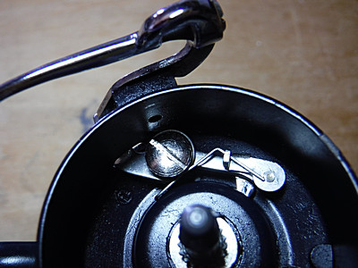

私のお気に入り
釣り道具 スピニングリール Mitchell 409/408
（故障と修理の顛末）
2019年7月7日、梅雨時のしとしと雨の中、本流を釣り下り、小規模なダムのバックウォーターまでたどり着いた。これぞ本命！ と言えるポイントを攻めていると、突然ミッチェル４０９のベールが動かなくなった。岸に戻り、慎重にスプールを外して確認するとベールの返りを制御するトリップレバーを固定する平ネジが緩んでガタついていた。下手に河原でいじくって部品を落としてしまっては大変なので、そのままスプールをはめていったん車に戻り、予備のダイワを取り出した。
帰宅後、さっそく修理に取り掛かった。いつもはルアーのフック交換に使っている小型バイス（口金にゴム板を貼って傷が付かないようにしてある）にリールのボディをそっと固定して作業を行った。しかし、簡単な構造であるにもかかわらず、平ネジの締込み具合が難しく、正しい位置が分からない。締め込みが足らないとトリップレバーがグラグラしてしまい、締込み過ぎると抵抗が強すぎてトリップレバーがスムーズに動作せず、結果としてベールを開いた位置で保持できなくなってしまう。

ネットを検索して408/409の部品図を入手し、それで確認すると、どうやら故障の際に現場で部品を無くしてはいないようだった。試行錯誤を繰り返し、全て締め込むまでの3/4ほどに平ネジを締め込むことでなんとか、正常に動作するようになった。これで一安心、と運搬用プラスチックケースに入れ、次回の釣行に備えた。
翌週の釣行で使っていると、最初は快適に動作していたのだが、途中で再度同じ症状が発生してしまった。こんなこともあろうかと、あらかじめウェストバッグに予備のリールを入れておいたので、釣りは続けられたが、ミッチェルの故障は根が深そうだった。
そうこうしている時に、釣り具の整理をしていると、1980年に買った１台目の409の取扱説明書が押し入れの奥の缶の中から出て来た。リールオイルが漏れて浸み込んで、まるで油紙のようになってしまっていた。めげずにしっかり見直したが、やはり部品の紛失という憂き目には遭っていないことが確認できた。しかし、どうやっても組付けが上手くいかない。

{kind=link}
{kind=link}
これはもう、エキスパートに尋ねてみるしかないな、と思い、ミッチェル、アブなどのリールについての著作を沢山出しておられ、充実したウェブサイト TAKE'S REEL ROOM を運営してみえる竹中由浩様にメールを書くことにした。
竹中由浩様
突然のメールで大変失礼致します。愛知県豊橋市在住の伊藤剛と申します。
ミッチェル409/408のベイル修理に関して教えてください。不勉強で部品名称など正確に分からず、御著書「MITCHEL」、「きわめて私的なミッチェルストーリー」、ウェブサイトなどを読ませて頂きながら書いておりますがご容赦ください。
10年前にオークションで購入した409（未使用品）をこれまで快調に使用しておりました。固定式ラインガイドとなっていることから初期のモデルだと思います。リールフットの番号は、687458 です。
先日の釣行時に、ベイルストッパー？（部品番号 81269/81297）を固定・保持しているネジ（部品番号 81293）が、釣りの最中に緩んでしまいました。
帰宅後、ネット記事を参考に組み直したのですが、ネジを締めすぎるとベイルをストップできなくなり、緩いとベイルストッパー自体がグラグラで正しい位置に留めておくことができません。
一昨日、とりあえず部屋では上手く動作するように修理できたので昨日使ったところ、またベイルストッパー機能が麻痺してベイルを起こしたまま保持できなくなってしまいました。
正しい組み立て方をご教授して頂ければ幸いです。
部品図を見る限り、故障時に現場でなくした部品は無いと思います。また、ネジ止め防止剤を購入したのですが、下手に使うと可動部まで固定してしまいそうで、先回の組み直し時点では使用しませんでした。使用するとすれば、どのような箇所にどのくらいの分量を使えば良いのか、おわかりでしたらこちらもぜひご指導願います。
大変ご多忙だと思われますので、お時間のある時に回答して頂ければ非常に嬉しいです。よろしくお願いいたします。
たいへんありがたいことに、竹中様はすぐ翌日に返信を下さった。御回答の要点は、
- 写真を見る限り組み間違いはしていないでしょう。
- トリップレバー81297とネジ81293を取り付けたあとでもスプリングの取り付けはできますので、レバーとネジを取り付けた段階で動きを確認するのもいいかもしれません。写真を見る限りそうは見えませんが、スプリングをネジがはさんでしまっているかもしれませんので。
- ねじ止め剤はネジのみぞに少しつけるだけにしますが、基本緩む箇所ではないので、使うのは原因を調べてからがいいのではないでしょうか
とのことだった。 なるほど！ と思い、スプリングをネジで挟まないように注意して組んでみるが、やはり、このあたりで良いかな？と思える位置で締めて、ベールがスムーズに保持され、反転するようになっても、数回繰り返すとまた正しく動作しなくなってしまう。
僕は今回不調になった409（初期生産型）の他に、もう１台の409（２世代目の型）を持っているので、そちらを参考にして組み立ててみるが、どうにも治らない。今現在何の問題もなく動いている方のトリップレバーをバラして、正しい組み方を調べようかとも思ったが、コワくてやめておいた。（笑）
袋小路に陥り、再びネットを探し回ると、The Mitchell Reel Museum というビンテージ・ミッチェルリール専門のウェブサイトを見つけた。そこにはフォーラムがあって、いろんなミッチェル愛好家たちが意見交換や質疑応答をしていたのである。そして、知りたいと思っていたトリップレバーの正常な取り付け位置に関する質問と回答が載っており、何番目かの回答者から画像がアップロードされていた。
ところが。その画像を見るにはアカウントを作成してからログインする必要があるのだが、すでに新規ユーザーがアカウントを取得することができなくなっており、僕は画像を見ることも新たな質問もできなかった。
『これは、困ったなぁ.....』
と頭を抱えたが、ひょっとして平ネジを締め込んでゆくにつれて、トリップレバーの位置が下がり過ぎて、スプールの溝にきちんと収まらなくなっているのでは？と疑い、素人考え丸出しで、ワッシャーを噛ませてみることにした。ホームセンターとダイソーにて合いそうなワッシャーを買って来て、いざ組んでみた。結果は見事に失敗！（笑） かえってトリップレバーの動きが悪くなってしまった。（泣）
三たびインターネットの海を彷徨い、とあるリール修理専門店さんを見つけた。リール屋ピカレスクさんといい、数々のオールドミッチェルをオーバーホールしたり修理した記事が掲載されており、口コミではすごく評判の高いお店だったので、速攻で電話で問い合わせしてみた。070-6683-3733
ピカレスクさんの言われるには、
- トリップレバーを固定している平ネジはいっぱい締めても大丈夫。その位置で正常に作動するとのこと。
- トリップレバーの取り付け、調整だけなら２～３千円の料金で請け負ってくれること。
などがわかった。
ここは思い切って、専門の修理屋さんにお願いしようか、とかなり心が傾いたが、やはり自分で直してみたいという思いが勝っていた。実を言えば、少々経済的な問題があったのだ.....（泣）
改めて観察し、考えてみると、どうも初期型408/409のトリップレバーの形状は複雑すぎて、平ネジの締め具合がデリケート過ぎるでは？ との結論にいたり、より単純な形状の２世代目の部品を探してみることにした。世代は違うが、ネジ穴の径とかレバーの長さなどは、おそらく設計変更されてはいないだろうから、適合するだろうとの読みに賭けた。
今では ebay という便利なサイトがあって、検索するとすぐにお目当ての部品（なんと新品！）が数人の方から売りに出されているのを見つけた。
MITCHELL 309,309A & 409 MODELS
BAIL ARM TRIP LEVER
MITCHELL PART REF# 81297
これだ！ と思って１番安かったイギリスの人からの出品を発注したが、部品代よりも送料が高くて驚いた。部品代が 2.30 ポンド（約338円）、送料が 7.99 ポンド（1,174円）、合計 10.29 ポンド（約1,512円）であった。しかし、50年ほども昔のリールの部品の新品がこの価格で手に入るのだから、送料云々を口にするのはバチが当たるというものだろう。
11/06に発注してから10日ほどが過ぎ、封筒でイギリスから部品が届いた。胸を踊らせて封を切り、ちゃんとビニール袋に封入されたトリップレバーを取り出し、いざ、初期型ミッチェル409 に組み込んだ。
すると！ 見事に動作した。やはり目一杯平ネジを締め付けてはいけなかったが、少し戻したところで止めると、元通り、きちんとベールアームが保持され、ハンドルを少し回しただけで戻る、あのフェザータッチのベール反転が蘇った！ 何度繰り返しても異常が再発することは無かった。
竹中様のコメントにはロックタイトを使う必要は無いとあったが、釣りの現場で再度緩んでも困るので、平ネジとバネ部分の隙間、わずかなスペースに限定して微量を付けておいた。ロックタイトを付けすぎてトリップレバー全体が動かなくならないように気をつけた。
数日後、試しに動作させてみると、やはりロックタイトを付けすぎたようで、動きがぎこちなかった。慌ててスプレーのグリスを吹いて、ようやくスムーズに動くようになった。（笑）
若い頃に生き別れになった許嫁の美しい女性と再会できたような気分であった。許嫁の女性というのも変な表現ではあるが....馬から落馬する、みたいな。＼(^o^)／
ともあれ、来シーズンの渓流が非常に楽しみである！！
追記： 2021年の開幕第２戦では、午後 0:45 ～ 6:30 まで、修理した新しい方の 409 を半日使ったが、ベールは完璧に動作した。とても嬉しい。60,000円以上もする同クラスの国内有名ブランドの最高級リールを 100台プレゼントしてくれると言われても、この１台には換えられない。（笑）
私のお気に入り 目次へ
サイトマップ
ホームへ
お問い合わせ